保守・点検
2026年11月
消火器の設置場所の決まり――歩行距離20mと見やすい表示
消火器は、建物の各部分から消火器までの歩行距離が20m以下（大型消火器は30m以下）になるよう、各階に配置することが消防法施行規則で定められています。廊下の直線距離ではなく、実際に歩ける経路で測るのが決まりです。設置高さは床から1.5m以下とし、通行や避難の妨げにならず、すぐに持ち出せる見やすい場所に置くことが大切です。
消防設備点検・設備保守に関する情報を発信しています
2026年11月
消火器は、建物の各部分から消火器までの歩行距離が20m以下（大型消火器は30m以下）になるよう、各階に配置することが消防法施行規則で定められています。廊下の直線距離ではなく、実際に歩ける経路で測るのが決まりです。設置高さは床から1.5m以下とし、通行や避難の妨げにならず、すぐに持ち出せる見やすい場所に置くことが大切です。

2026年11月
感知器の誤作動は、調理やたばこの煙、工事の粉じん、感知器の内部に入った小さな虫や結露など、火災以外の原因で起きることがあります。まず誤作動した感知器の種類と場所、発生した時間帯や天候、近くで工事や調理がなかったかを確認して原因を切り分けます。清掃で直る場合もあれば、設置場所の見直しが必要な場合もあります。
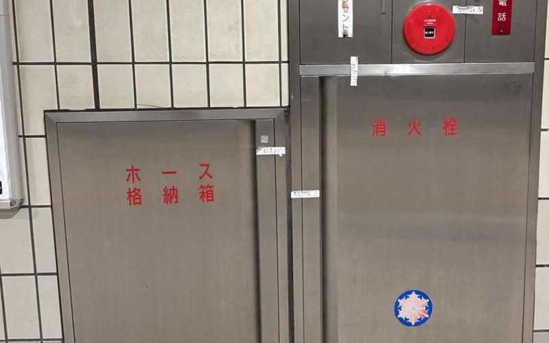
2026年11月
屋内消火栓などの消防用ホースは、製造年の末日から10年を経過した日以降に行う点検で耐圧性能の点検を行い、異常がなければその後は3年以内ごとに続けます。ただし易操作性1号・2号消火栓の保形ホースは対象外です。ホースに漏水や変形が見つかれば交換が必要です。製造年はホースに表示されているので、点検の前に確認しておくと段取りが決めやすくなります。

2026年11月
消防用設備等の点検結果の報告は、特定防火対象物は1年に1回、非特定防火対象物は3年に1回と、建物の用途で周期が決まっています（消防法施行規則第31条の6）。点検そのものは機器点検が6か月に1回、総合点検が1年に1回です。物件ごとに用途区分と前回の報告日を台帳に記録し、報告期限を一覧で管理しておくと、提出漏れを防げます。

2026年11月
パッケージ型消火設備は、火災の検知と消火剤の放出の機能をひとつの装置にまとめた消火設備で、電気室や厨房など小さな区画の消火に使われます。点検では表示灯や圧力計の状態、装置まわりの障害物の有無、感知部の汚れを確認します。作動後の復旧や薬剤の補充は専門の業者に依頼し、点検の記録を残して次の点検につなげることが大切です。

2026年11月
消防設備点検の結果は、設備ごとに定められた点検基準に照らして点検票へ「良」「不良」で記録されます。不良でも、感知器の清掃や電池交換、表示灯の球替えのような軽微なものは、点検時にその場で直せることがあります。一方、機器本体の交換や配線の修理が要るものは、消防設備士による改修として別途見積りになるのが一般的です。境目を知っておくと、点検後の報告を受けたときに改修の優先順位を判断しやすくなります。
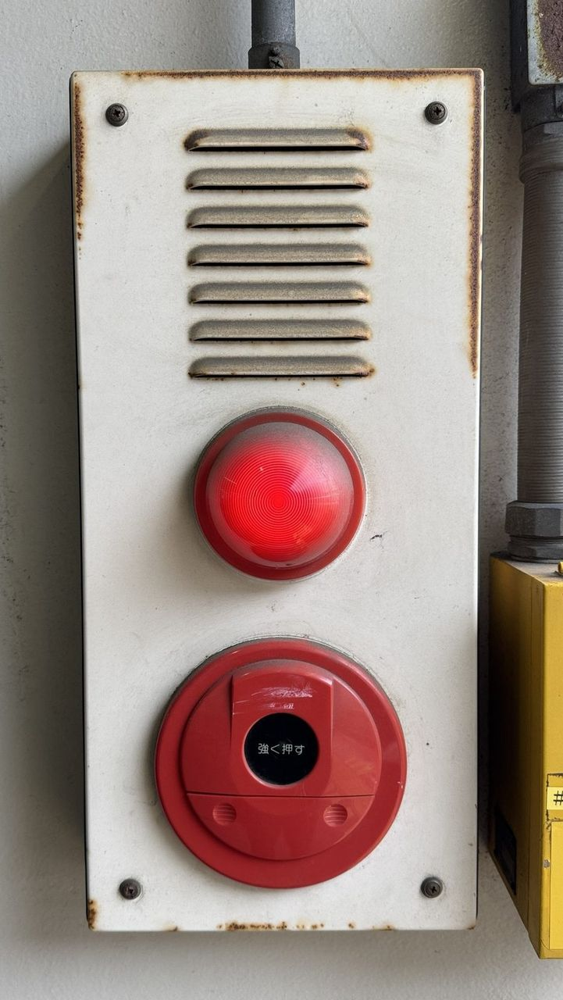
2026年11月
立入検査は消防法第4条に基づき、消防職員が防火対象物の位置・構造・設備や管理の状況を確認するものです。当日は消火器や自動火災報知設備、避難経路などが見られ、防火管理者の選任届や消防計画、点検結果報告書の控えなどの書類確認も行われます。直前に慌てないためには、日頃の点検報告と届出の控えを一か所にまとめ、指摘を受けやすい避難経路の物品放置などがないか事前に見ておくことが大切です。
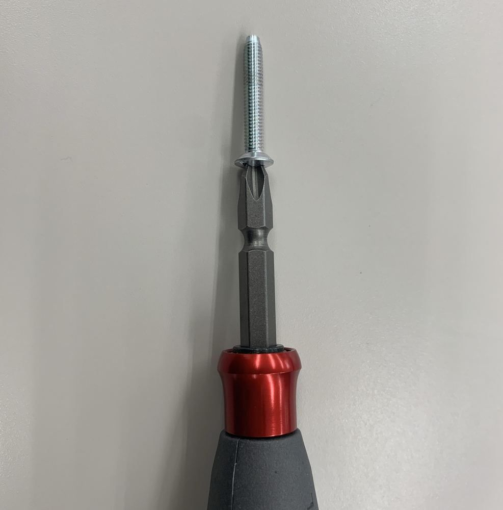
2026年11月
消防設備士の免状には甲種と乙種があり、甲種は担当する類の設備について工事・整備・点検のすべてを行うことができますが、乙種ができるのは整備と点検のみで、工事は行えません。また、扱える設備は免状の類ごとに決まっているため、感知器の移設や増設といった工事が伴う依頼では、対応する類の甲種を持つ設備士が必要です。点検だけの依頼か、工事まで含むのかで、依頼先に必要な資格が変わります。

2026年11月
停電時に誘導灯が点かない場合、まず器具のモニタ（充電表示）の状態と点検スイッチによる点灯確認、次に分電盤など常用電源側の異常、蓄電池のコネクタの緩みや膨らみを順に切り分けます。誘導灯には非常時に20分間点灯し続けることが求められ、蓄電池は消耗品のため、メーカーは使用開始から4〜6年を交換の目安として案内しています。点かない原因が器具本体の故障か蓄電池の寿命かで、対応も費用も変わります。

2026年11月
住宅で民泊（住宅宿泊事業）を始めるには、住宅宿泊事業の届出の際に消防法令適合通知書の提出が求められます。建物は消防法令上の用途が判定され、自動火災報知設備や誘導灯、消火器などの設置が必要になるのが一般的です。延べ面積300㎡未満の小規模な建物では特定小規模施設用自動火災報知設備が認められる場合や、要件を満たせば誘導灯の設置が免除される場合もあります。設備を整えてから管轄の消防署へ交付申請を行います。
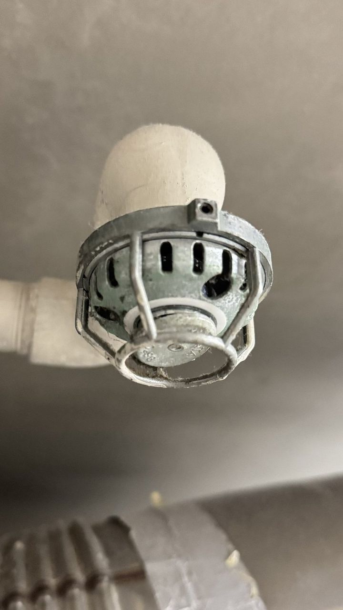
2026年11月
スプリンクラー設備の標準的な耐用年数は約20年とされており、1980〜90年代に設置された建物では更新時期が集中する「スプリンクラー特需」が起きています。管理会社・ビルオーナーが特需の背景を理解し、早めに更新計画を立てることで、工事費の高騰や業者不足のリスクを回避できます。
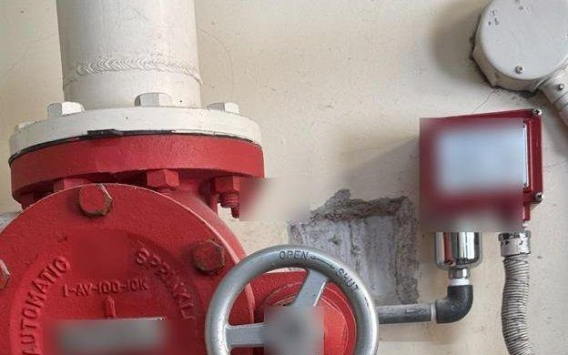
2026年11月
スプリンクラーヘッドの耐用年数は、NFPA規格・国内消防法の運用基準ともに製造から20年が目安です。ヘッドの異常サインは①感熱部の変色・腐食、②散水障害となる塗装付着、③フレームの変形の3項目で確認できます。20年を超えたヘッドは定期点検のたびに現状確認し、異常があれば即時交換が原則です。
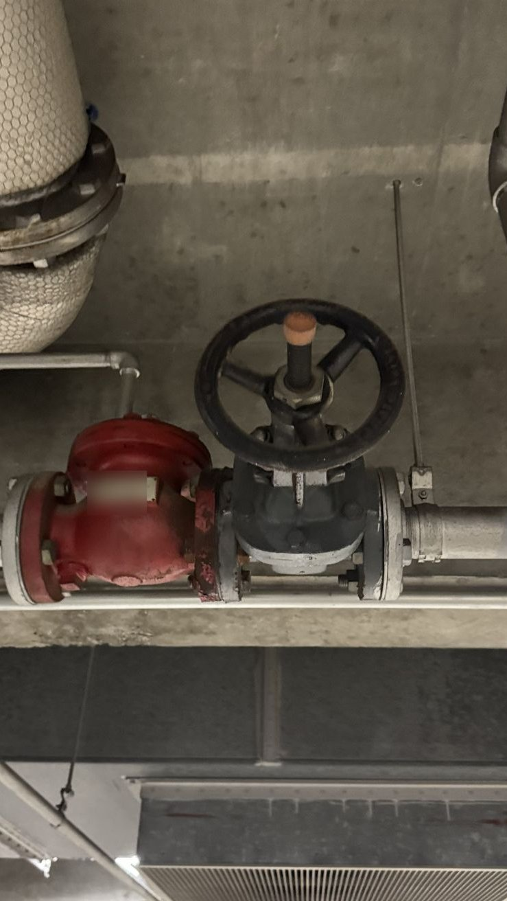
2026年11月
スプリンクラー配管の更新費用は建物規模・工法・配管材料によって大きく異なりますが、一般的なマンション（10階建て・50戸）では総工費1,500〜3,000万円程度が目安です。費用を左右する主な要因は①隠蔽配管か露出配管か、②配管材料（鋼管・ステンレス・塩ビ）の選定、③仮設足場の要否の3点。複数社への相見積が不可欠です。
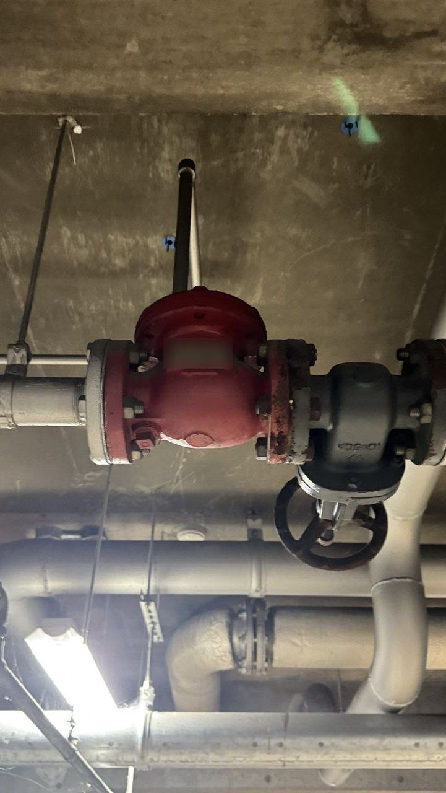
2026年11月
専門業者による定期点検の前に、管理会社が自ら実施できる老朽化診断チェックリストを10項目にまとめました。①制御弁の開閉表示確認、②流水検知装置の圧力計読み取り、③バルブ接合部の滲み目視確認、④ヘッド周辺の塗装・変色チェックなど。日常巡回時にチェックすることで、問題の早期発見と業者への的確な情報提供が可能になります。
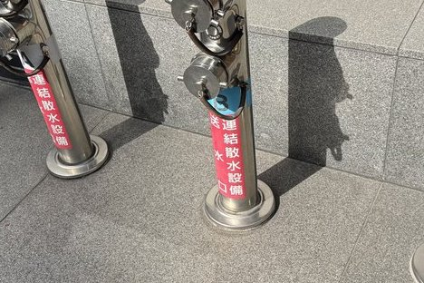
2026年11月
スプリンクラー設備は配管内の媒体と動作方式によって湿式・乾式・予作動式の3種に分けられます。湿式は常時加圧水が充填されて即時放水できる標準仕様、乾式は凍結リスクのある駐車場・倉庫向けで空気を充填、予作動式は誤放水を最小化したい電算室などに適しています。更新時にはその建物の用途・気候条件に合った方式を再確認することが重要です。
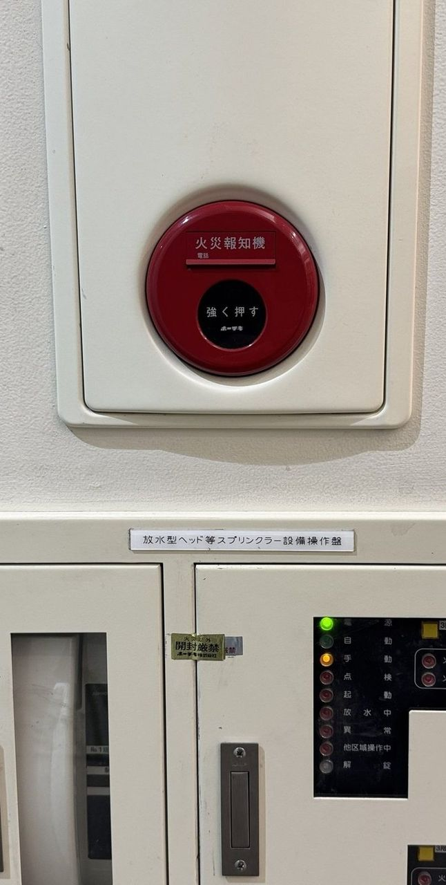
2026年11月
スプリンクラーのヘッドや配管に比べ、制御弁と流水検知装置（アラームバルブ・乾式弁など）の更新目安は意識されにくい傾向があります。しかしこれらの機器も15〜20年が推奨更新年限とされており、弁座の腐食・パッキン劣化・リタデングチャンバーの詰まりなど機能低下が進むと消防点検で不合格となる可能性があります。
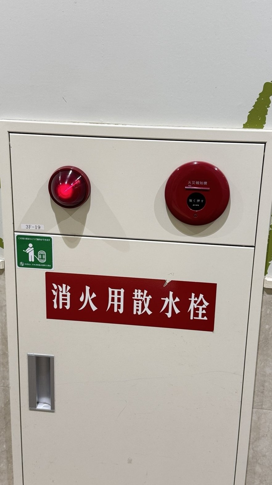
2026年11月
スプリンクラー設備の更新には高額な費用がかかりますが、建物用途・自治体・法令要件によっては補助金・助成金の活用が可能です。主な制度として①中小企業向け設備投資補助金（業種要件あり）、②各都道府県の防火安全対策補助、③耐震改修と組み合わせた総合助成などがあります。申請には見積書・設備台帳・消防点検結果報告書の準備が必要です。
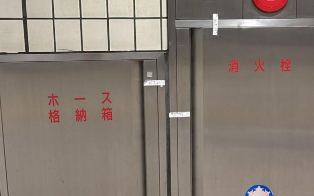
2026年11月
スプリンクラー特需が高まる中、施工実績のない業者への発注リスクが高まっています。信頼できる業者の選定ポイントは①消防設備士（甲1類）の在籍・指定消防設備業者の認定有無、②過去5年以内の同規模物件での施工実績、③点検・補修のアフターフォロー体制の3点です。見積提出時に施工実績一覧と担当技術者の資格証を提示できるか確認することが重要です。
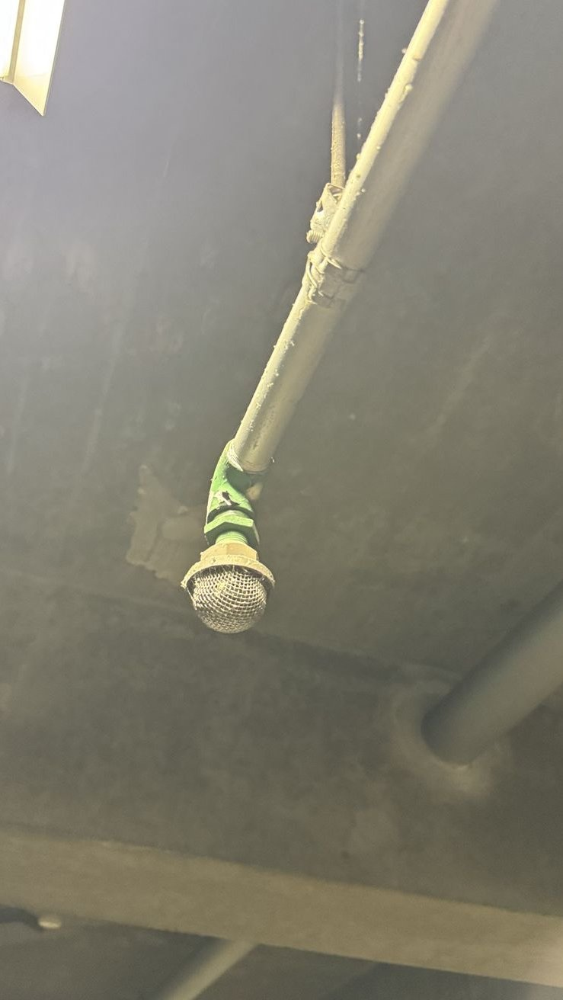
2026年11月
スプリンクラー設備の更新工事は、着工前に消防署への設置届・工事計画書の提出が必要です。工事完了後は消防設備士による完工確認を受け、管轄消防署の検査を経て使用開始となります。一般的な工期はフロア単位で2〜4週間ですが、仮設給水配管の設置や入居者への断水告知など事前調整が多く、工事開始の3〜6か月前から計画を進めることが重要です。
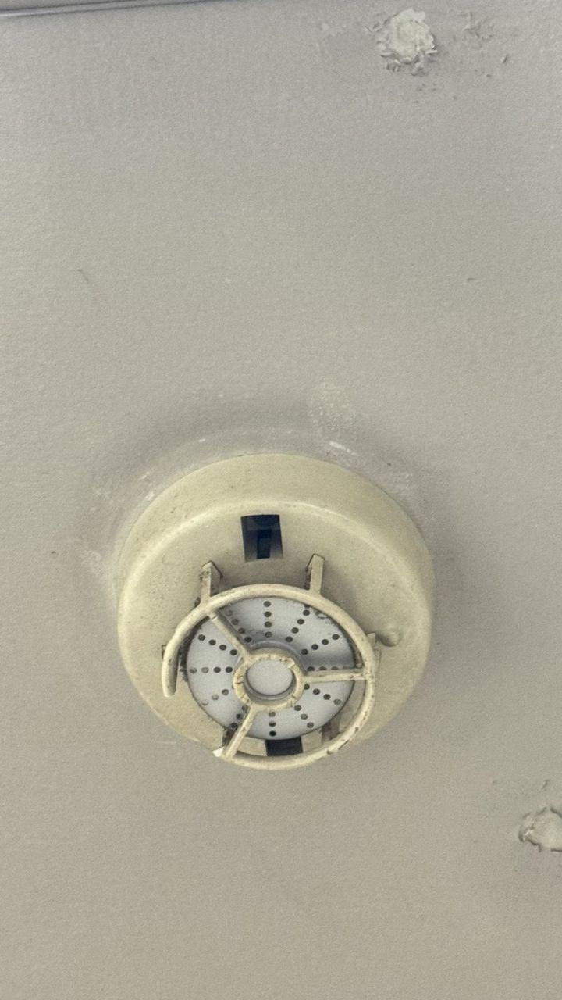
2026年11月
スプリンクラー設備の更新を先送りすることで生じるリスクは①消防点検で不合格指摘を受け是正期限内の高コスト工事を強いられる、②老朽化による誤作動・非作動で水損事故や火災被害が拡大する、③工事費が割高になる「急ぎ発注」コストの発生、の3点です。計画的な更新は長期的なコスト削減と安全管理の両面で合理的な選択です。
2026年11月
煙感知器（光電式スポット型）は設置から10年が更新目安とされていますが、管理台帳に設置年が記載されていない物件では更新時期を見落としがちです。設置年を後から確認する方法として、感知器本体の刻印・型式適合証を確認する手順と、消防設備点検業者に照会する際の問い合わせポイントを解説します。
2026年11月
発信機（押しボタン式）と地区音響装置（ベル・ブザー）は比較的壊れにくいため更新が後回しになりがちですが、設置から20年を超えると内部部品の経年劣化が進みます。保護カバーの黄ばみ・ひび割れ、ボタン反力の低下、鳴動音の歪みという3つのサインが現れた場合は、早めの更新検討が必要です。
2026年11月
自動火災報知設備の受信機・中継器には停電対応用の内蔵蓄電池が搭載されており、メーカー推奨の交換周期は3〜5年です。蓄電池が劣化すると停電時に設備が動作しなくなる恐れがあります。交換時期の判断基準と管理台帳への記録方法を整理し、次回点検前に自社物件の蓄電池状況を確認するためのチェックリストを紹介します。
2026年11月
加圧式・蓄圧式を問わず、消火器は製造後10年（蓄圧式は製造後5年）経過した時点で耐圧性能検査（水圧試験）が義務付けられています。管理台帳に製造年が記載されていない消火器については、本体底面のパンチング刻印または銘板ラベルで製造年を確認し、基準超過品は廃棄・新品交換を進める必要があります。
2026年11月
自動火災報知設備の受信機はP型で15〜20年、R型で15年程度が更新目安です。更新タイミングでは現行のP型をそのまま後継機に交換するか、将来の増設・改修を見越してR型へ切り替えるかを検討する必要があります。建物規模・感知器数・将来計画から判断基準を整理し、管理会社が設備業者に相談する際に押さえるべきポイントをまとめました。
2026年11月
2023年以降の法令改正で無線式自動火災報知設備の設置対象が民泊施設・小規模共同住宅にも拡大されました。有線配線が困難な既存物件へのリトロフィット工事が増加する中、管理会社として把握すべき設置基準の変更点と、既存物件の要否確認フローを解説します。設備業者に依頼する前の事前調査ポイントも整理しています。
2026年11月
消防設備の更新費用は「まとめて更新すると高額」「毎年少額が発生する」という二極化が起きがちです。物件台帳に各設備の設置年・推奨更新年・概算費用を記載し、10年スパンの修繕計画として可視化することで、年間費用のピーク分散と予算策定の精度向上が実現できます。エクセルで管理している管理会社向けの台帳フォーマット例も紹介します。
2026年11月
築25年のマンション管理を受託した管理会社が、個別更新で発生していた足場・養生の重複コストを解消するため、受信機・感知器・発信機・非常放送設備を同時更新した事例を紹介します。設備単独更新時と一括更新時のコスト比較、業者交渉のポイント、管理組合への説明資料の作り方など、実務で役立つ情報をまとめています。
2026年11月
中古物件の取得や管理会社の切り替え時に、既存消防設備の設置年度が不明なケースがあります。設備本体の銘板・型式適合証・製造番号から製造年を逆算する方法のほか、消防署に保管されている点検結果報告書や設置届の閲覧申請で設置年を確認する手順を具体的に解説します。
2026年11月
消防署の立入検査で指摘票を受け取ってから動き始めると、改修期限までの時間が短く費用も割高になりがちです。設備の経年・外観・動作の3軸で自主確認できる「更新予防チェックリスト」の活用方法と、定期点検業者との情報共有で指摘リスクを事前につぶすための管理フローを紹介します。
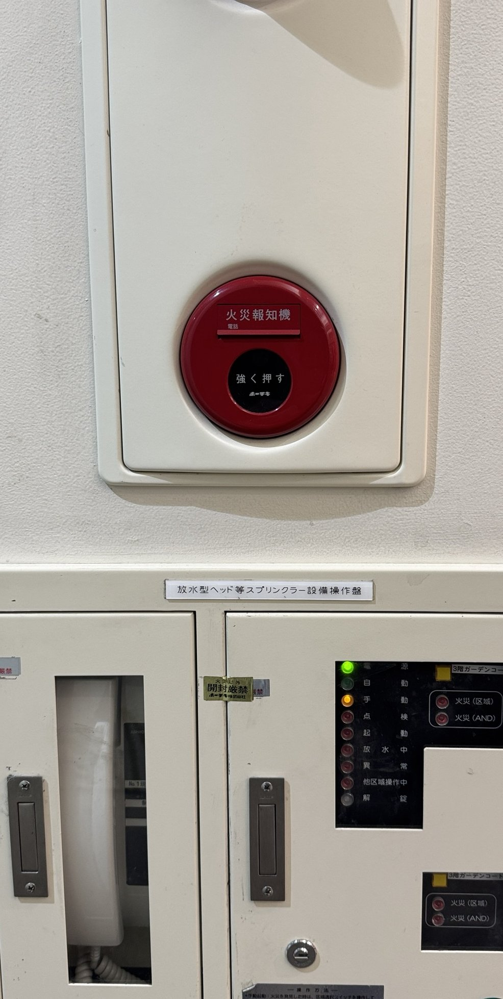
2026年11月
放水型スプリンクラー設備には、通常の閉鎖型と異なり「操作盤」が必要です。自動・手動・点検・放水中などの表示灯や専用電話が一体化した操作盤の役割と、発信機との設置関係、定期点検で確認すべきポイントを実物写真とともに解説します。
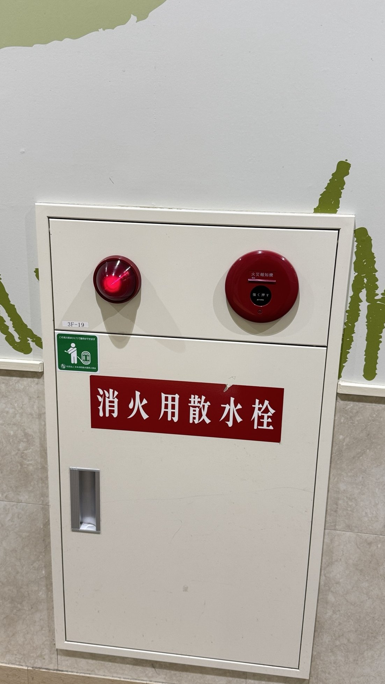
2026年11月
「消火用散水栓」はスプリンクラー設備の一種ですが、自動放水するヘッドとは用途が異なります。駐車場や廊下に設置されるケースが多く、開放型ヘッドへの送水を人の操作で制御する仕組みです。管理者が点検時に確認すべき項目と、自動火災報知設備との連動動作についても解説します。
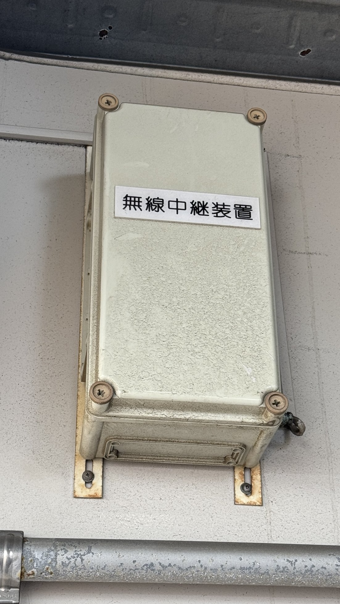
2026年11月
無線式自動火災報知設備は、感知器と受信機の間に「中継装置（無線中継器）」を設けて信号を確実に届ける仕組みです。外壁や廊下天井に設置されることが多く、担当者交代後に存在すら把握されていないケースも少なくありません。定期点検では電池残量・通信確認・外装腐食の3点を必ずチェックしましょう。
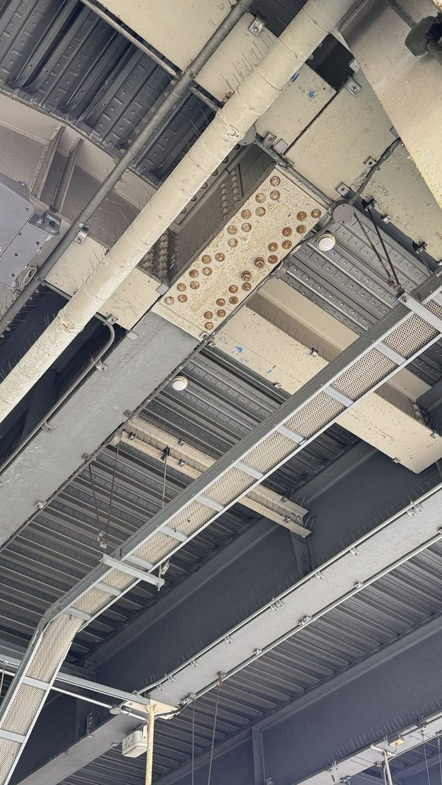
2026年11月
天井内部の鉄骨架台・ケーブルラック・消防設備配管は日常目視が難しく、腐食や結露による劣化が気づかないまま進行しやすい場所です。外装が腐食すると絶縁不良・漏水・落下リスクへと発展します。年次点検の際に天井内部まで目視確認する習慣をつけることが、大規模修繕コストの平準化につながります。
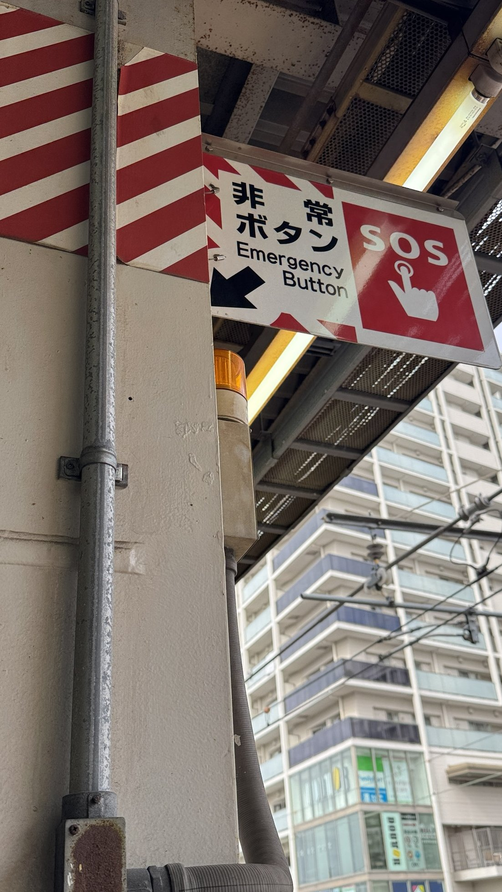
2026年11月
「非常ボタン（SOS）」は転落・危険を知らせる安全設備であり、消防法に基づく自動火災報知設備の「発信機」とは別の設備です。管理建物に設置されている非常用設備の種類と所管を正確に把握しておくことが、適切な点検発注と法令対応の出発点になります。消防設備に該当する設備は毎年の法定点検が義務づけられています。
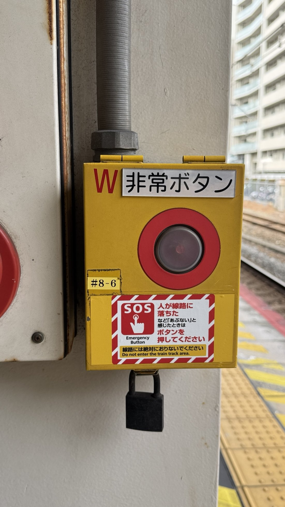
2026年11月
設備の種類・設置場所・識別番号を台帳と現場標識で一致させると、定期点検の漏れ防止と部品手配の効率化が同時に実現できます。担当者が変わっても設備履歴を引き継げるため、管理会社の業務品質が安定します。消防設備点検でも識別番号管理を導入することで、複数棟を抱える会社の作業工数が大幅に削減されます。
2026年11月
自動火災報知設備の発信機には「確認灯（赤色表示灯）」が設けられており、受信機が火災信号を受け取った状態で点灯します。常時点灯や頻繁な誤作動が続く場合は、感知器の劣化や配線障害が原因のことが多いです。年次点検では押しボタン動作確認とあわせて確認灯の点灯パターンを記録し、設備の健全性管理に役立てましょう。
2026年11月
消防設備の定期点検は建物用途によって「特定防火対象物（年2回）」と「非特定防火対象物（年1回）」に分かれます。年末が近づく11月は翌年度の点検スケジュールを立て直す絶好のタイミングです。複数棟を管理する会社は棟ごとの用途と点検区分を確認し、見落としのないスケジュール表を作成しておきましょう。
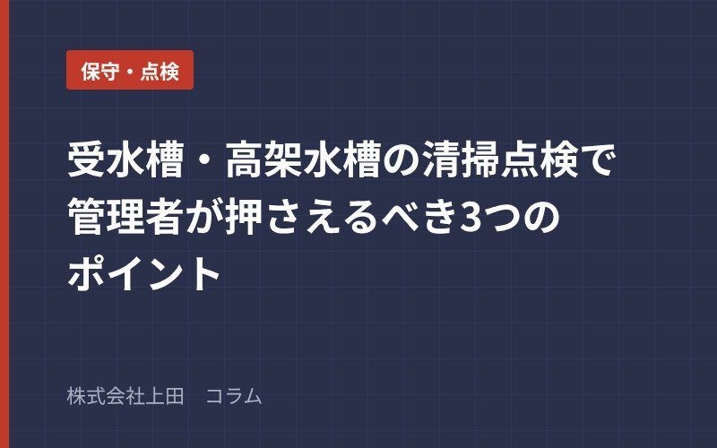
2026年10月
マンションや商業ビルの給水設備として欠かせない受水槽・高架水槽は、有効容量10m³を超えるもの（簡易専用水道）について、水道法により年1回の清掃と定期検査が義務付けられています。
管理者が特に注意すべき3点は
①槽内壁・浮き球・マンホールパッキンの劣化確認（ひび割れは雑菌汚染の入口となるため早期交換が必須）
②水位調整弁（ボールタップ）の動作チェック（弁の引っかかりや磨耗はオーバーフローや断水の原因となる）
③清掃後の残塩素測定（清掃・消毒後に0.1mg/L以上の残留塩素を確認しないと衛生基準を満たせないため、専門業者による水質検査報告書の取得が必要）。
適切な管理で居住者の安全を守りましょう。
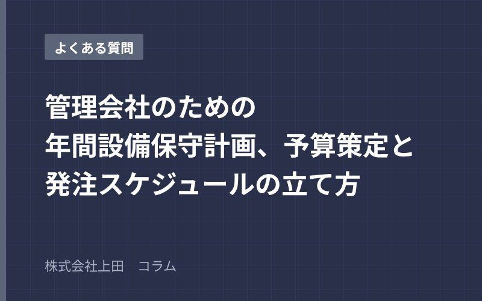
2026年10月
設備保守を場当たり的に依頼している管理会社ほど、緊急対応コストが膨らむ傾向があります。
年間計画を立てる際は
①法定点検スケジュールの洗い出し（消防・電気・給水など各法令の点検周期を一覧化し期限超過ゼロを目標に発注タイミングを設定する）
②繁忙期を避けた早期発注（年度末は業者の予約が集中しやすいため、早めに翌年度分の見積もりを依頼する）
③突発修繕用の予備費設定（あらかじめ一定額を確保しておくと、機器故障時の予算執行が柔軟になる）の3点が基本フレームです。
計画書のフォーマット化で担当者交代時の引き継ぎもスムーズになります。
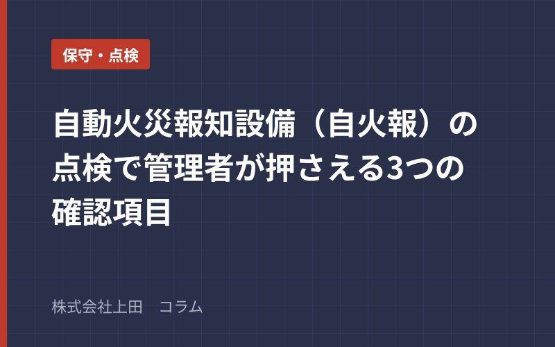
2026年10月
自動火災報知設備は感知器・発信機・受信機・音響装置で構成される法定設備で、半年ごとの点検が義務です。
点検で特に重要な3項目は
①感知器の動作試験（型式適合・誤作動歴の確認）
②受信機の表示・スイッチ機能（地区表示・火災表示が正常か）
③警報音の鳴動確認（全フロアで規定音量を確保できているか）。
感知器の誤作動（非火災報）の主因は内部の汚れ・老朽化で、設置10年超は交換を検討するタイミングです。
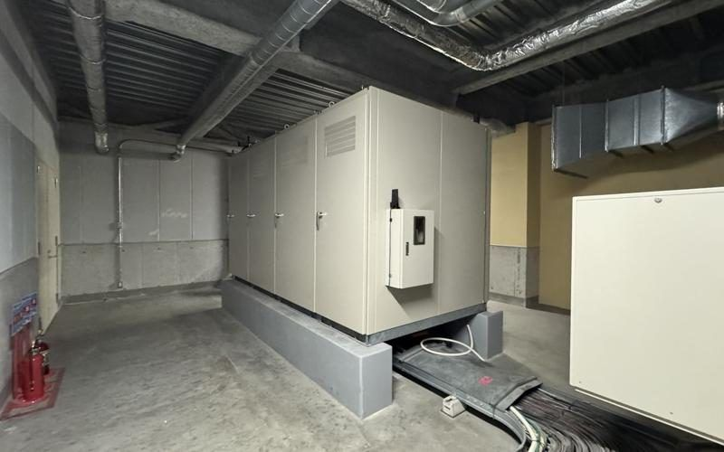
2026年10月
電気室や機械室は高電圧環境・熱源が集中する特殊な環境のため、消火器の選定基準が一般居室と異なります。
点検時に押さえる3項目
①適応火災の確認（電気火災に適応した消火器か。ABC粉末・二酸化炭素など）
②設置位置と動線（扉開閉・通路幅に支障がないか）
③安全ピン・ラベル・製造年の劣化チェック。
この3点を習慣的に確認するだけで、薬剤の不適合や交換漏れを未然に防げます。
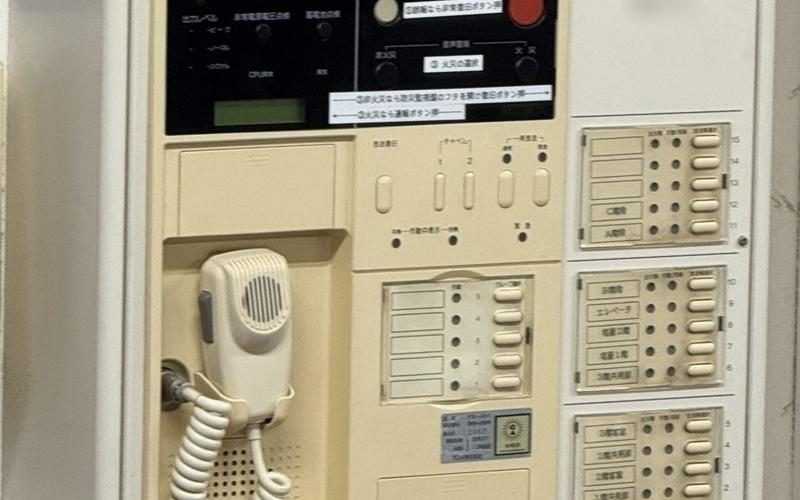
2026年10月
非常放送設備は火災時の避難誘導を担う法定設備で、点検の核心は
①スピーカーの鳴動確認（全フロア）
②増幅器の電源・動作試験
③自動起動回路と手動起動の両方向チェックの3点です。
現場で多い不具合は結線不良と音量不足で、いずれも早期発見が重要です。
不具合は点検報告書に正確に反映し、期限内に改修することが管理者の義務です。
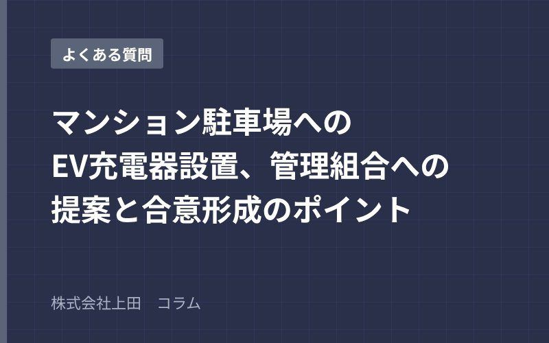
2026年10月
管理組合への提案で合意を得るには
①設置・電気工事費用の総額と負担方法
②月々の電気料金配分ルール
③利用資格と予約管理方法の3点を議案書に明記することが近道です。
工事期間中の駐車スペース確保も忘れずに盛り込むと反対意見が減ります。
よくある反対意見は「費用が不公平」「自分は使わない」の2パターンで、事前にQ&Aを用意しておくと審議がスムーズです。
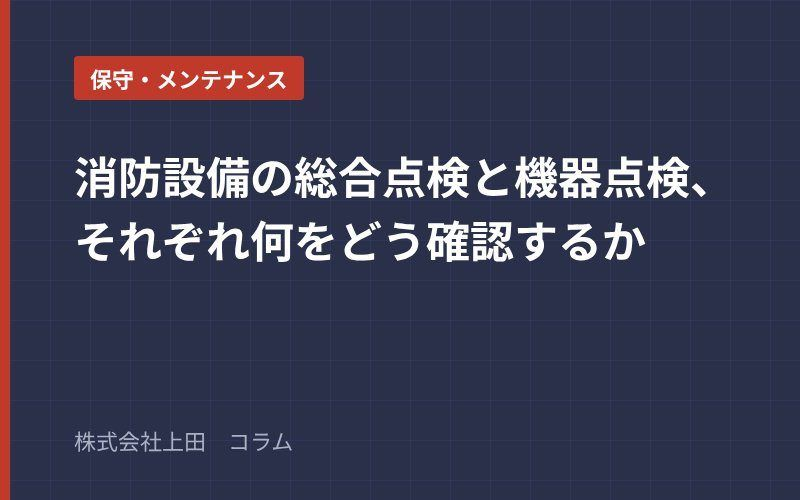
2026年10月
消防法は半年ごとの機器点検と年1回の総合点検を義務付けています。
機器点検は外観・機能の簡易確認にとどまりますが、総合点検では実際に設備を起動・放水させる実動確認が必要です。
費用は機器点検が安く、総合点検が割高になります。
どちらも未実施は法令違反——点検周期と報告義務を混同しないことが管理会社に求められる最低限の知識です。
2026年10月
新設直後の不具合TOP5は
①扉ラッチの調整不足（開閉不良）
②通信モジュールの設定ミス（通知が届かない）
③暗証番号システムの初期化忘れ
④配線・電源コネクタの接触不良
⑤防水処理の甘さによる結露です。
いずれも設置後の早い時期に見つかりやすく、引渡し時の立会いチェックで防げるものが多くあります。
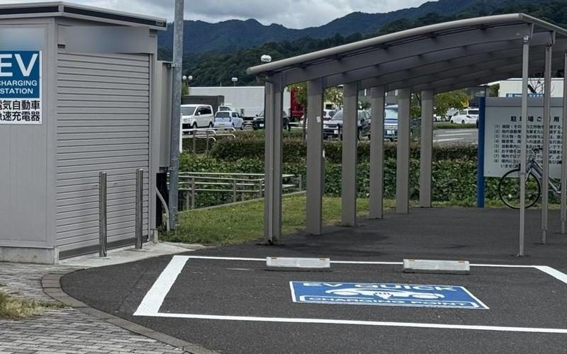
2026年10月
普通充電（一般に3〜6kW程度）は設置コストが低く居住用に向いていますが、急速充電（数十kW級）は商業施設向けで、設備費・保守費ともに高くなりやすい設備です。
保守の主な違いは
①点検の周期と内容（各メーカーの保守基準に従う。急速充電器は機器が大型で確認項目が多い）
②部品コスト（急速充電器の電力変換部は高額になりやすい）
③保安体制（高圧で受電する設備は、電気主任技術者による保安管理の対象になる）です。
マンション駐車場なら普通充電が現実的な選択肢です。

2026年10月
排水詰まりの主な原因は
①糸くずフィルターの清掃不足
②衣類からの異物混入（コイン・紙類など）
③排水管内の油脂・洗剤カスの蓄積の3つです。
応急対処はフィルター確認→排水口の直接確認→業者呼び出しの順で実施します。
こまめなフィルター清掃と、定期的な排水管の洗浄が予防の基本です。
2026年10月
特例認定は、防火対象物定期点検報告制度の対象となる建物が、防火管理を適正に行っているとして消防長（消防署長）の認定を受けると、3年間その点検・報告が免除される制度です（消防法第8条の2の3）。
主な要件は
①管理を開始してから3年以上経過している
②過去3年以内に消防法令違反による命令を受けていない
③防火管理者の選任・消防計画の届出などが適正に行われている、などです。
注意点は、免除されるのは「防火対象物の点検」であり、消防用設備等の点検・報告（消防法第17条の3の3）は免除されないことです。
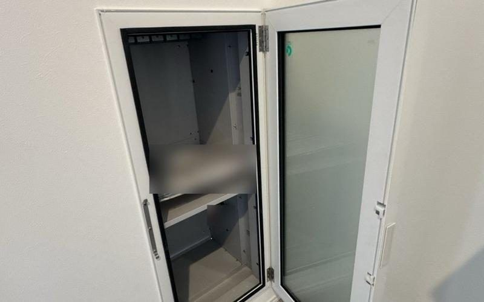
2026年10月
メーカー選定で見るべき3点は
①部品供給期間（最低10年以上が目安）
②修理対応エリアと到着時間（地方物件は要注意）
③コールセンターの対応時間（夜間・土日対応か）です。
コスト重視で選んだ結果、地方での即日対応ができなかったトラブルは現場でよく見られます。
保守契約の内容（部品代込みか別途か）も契約前に必ず確認してください。
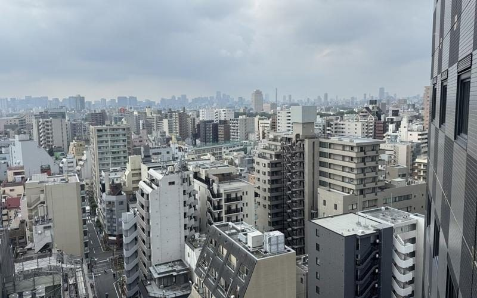
2026年10月
首都圏の設備保守需要が拡大している背景は3つ
①築年数の進んだマンションの増加による設備更新
②EV充電設備・宅配BOXなど新しい設備の普及
③熟練技術者の高齢化による対応業者不足です。
需要が増える一方で供給が追いつかず、優良業者の早期確保が管理会社の競争力になっています。
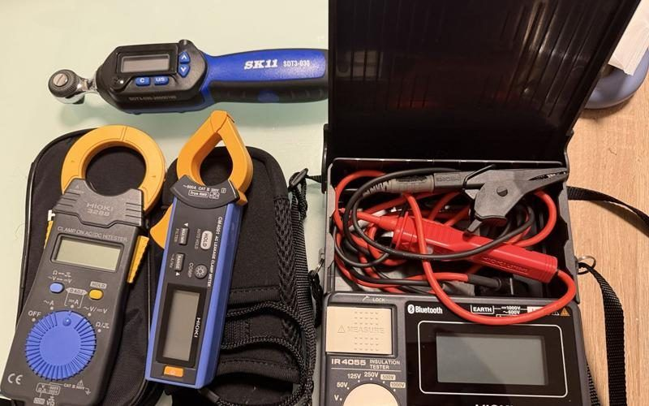
2026年10月
見積金額が安く見えても別途発生しやすい費用は
①出張費・交通費
②部品代の扱い（定価か、手数料が上乗せされるか）
③夜間・休日割増料金
④報告書作成費の4つです。
比較時は「年間総支払額」を計算し、各社に同条件のシミュレーションを依頼するのが有効です。
「部品代実費」と書かれている場合も、何を基準にした金額かを確認しておくと安心です。

2026年10月
設置前に必ず確認すべき3項目は
①電力会社との契約容量（不足なら電力申請が必要）
②既存幹線のサイズと余裕（増設工事の要否を判断）
③配電盤の空きブレーカー数です。
これを確認せずに工事を進めると、過負荷トリップが多発し入居者クレームにつながります。
確認は電気設備の竣工図と現地調査の両方で行うのが鉄則です。

2026年9月
洗剤投入口の詰まり・液漏れの主な原因は
①粉末洗剤の固化（湿気による）
②柔軟剤の残留・蓄積
③使用禁止洗剤の投入の3つです。
対処はぬるま湯で溶かしながらブラシでかき出し、取れない場合はパーツを外して洗浄します。
「使用可能洗剤の種類と投入量」を機器横に掲示するだけで、問合せと詰まりが大幅に減ります。
2026年9月
法定点検は、一定規模以上の建物では消防設備士または消防設備点検資格者が実施し、結果を消防署に報告する義務があります。
自主点検は管理者が日常的に行う動作確認であり、法定報告の代替にはなりません。
「自分たちで点検しているから大丈夫」と思い込んで未報告扱いになるケースが現場では多く見られます。
法定点検は「資格者が実施→書類で報告」がセットと覚えてください。
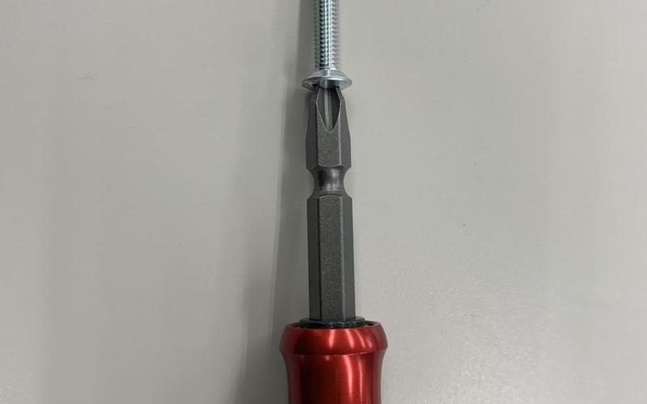
2026年9月
暗証番号リセット対応で整備すべき3つは
①マスターコードを担当者全員が参照できる安全な場所に保管
②リセット手順をメーカー別にマニュアル化（設置時に取扱説明書を必ず保管）
③夜間対応の可否と連絡先を入居者に事前周知することです。
手順を明文化しておくと、問合せへの対応時間を短くできます。
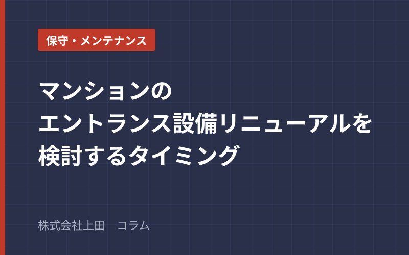
2026年9月
オートロック・インターホン・宅配BOX・防犯カメラは、設置時期が近いため老朽化の時期も重なりやすい設備です。
一括リニューアルのメリットは
①工事回数の削減
②メーカー保証の統一
③入居者への工事負担の集中回避の3点で、個別交換を繰り返すより費用効率が高まります。
修繕積立金の計画と照らし合わせ、大規模修繕のタイミングに合わせるのが現実的です。
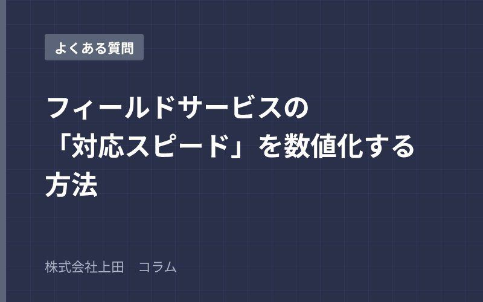
2026年9月
「早い」は主観的で業者比較に使えません。
計測すべき3指標は
①MTR（受付〜初動開始までの平均時間）
②MTTR（初動〜復旧完了までの平均時間）
③初回解決率（1回の訪問で解決した割合）です。
この3指標を月次で記録し委託業者と共有することで、感覚ではなくデータで品質管理ができます。

2026年9月
EV充電器のトラブル大半は
①充電が開始できない（認証失敗・通信障害）
②途中で停止する（過電流・コネクタ不良）
③エラーコード表示（機器固有の故障）の3パターンです。
一次対応は電源ブレーカー確認→リセット→メーカーサポートへの問合せの順で実施します。
エラーコードをメモしてから業者に連絡すると診断が早まり、出張回数を減らせます。

2026年9月
収益性の判断に使うべき3指標は
①月次稼働率（機器稼働時間÷営業時間）
②修繕費率（修繕費÷売上の比率）
③機器別の故障頻度です。
修繕費率が年々上がっている場合は、機器更新を検討する目安になります。
データを記録していない店舗は「なんとなく調子が悪い」で判断することになり、更新が遅れて機会損失が拡大するパターンが多く見られます。

2026年9月
不備指摘を受けたら放置は絶対NGで、消防署からの指導・命令に発展します。
対応の3ステップは
①指摘を受けたら早めに是正計画（工期・費用・担当者）を作成
②期限内に改修完了
③完了を点検業者経由または直接消防署に報告、です。
よくある不備は誘導灯のバッテリー劣化・消火器の期限切れ・感知器の未警戒（間仕切り変更などで感知器がない部屋ができる）で、いずれも早期対処できれば費用は最小限です。
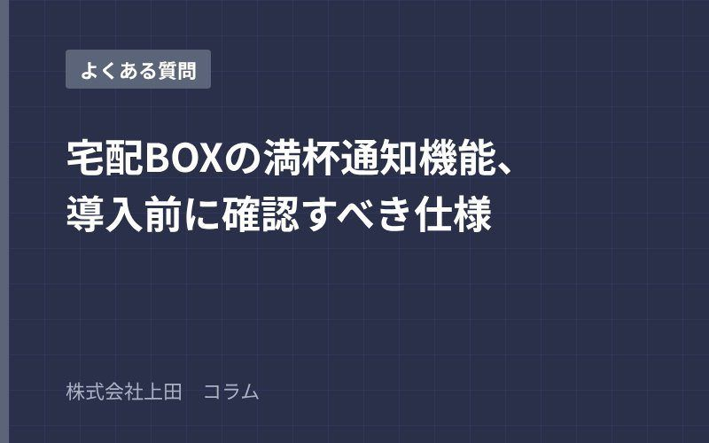
2026年9月
満杯通知方式は
①メール通知（管理者へ）
②アプリ通知（入居者・管理者）
③管理システム連携の3種類があり、それぞれ通知精度と費用が異なります。
IoT連携型は、月額の通信費が別途かかる場合があります。
導入前に確認すべきは通知の遅延時間・障害時の動作・解約後のデータ扱いの3点で、「満杯なのに通知が来ない」は通信仕様の確認不足が主な原因です。
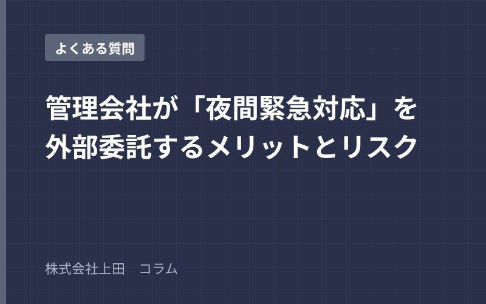
2026年9月
外部委託のメリットは
①夜間・休日の人員確保コスト削減
②対応可能な技術範囲の拡大
③担当者の精神的負担軽減の3点です。
委託先選定で必ず確認すべきは
①対応エリアと到着時間目安
②対応可能な設備の範囲
③作業後の報告フォーマットです。
「なんでもやります」という業者は要注意——対応範囲を書面で明確にしてください。
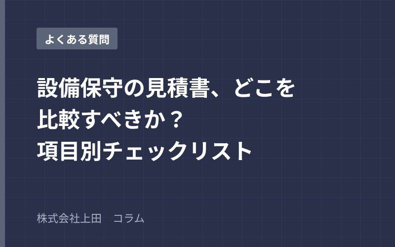
2026年9月
見積書の比較で見落としやすい5項目は
①部品代の扱い（込み or 別途）
②緊急出動費（発生条件と単価）
③夜間・休日割増料金
④消費税の計上方法
⑤報告書作成費です。
各社に同条件で「年間総支払額シミュレーション」を依頼することで、表面価格だけでは見えない差が明確になります。
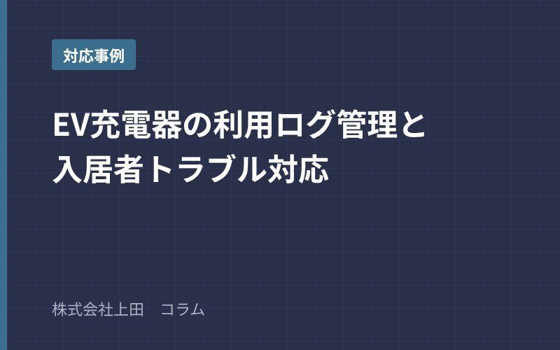
2026年9月
利用ログが必要になる場面は
①充電し忘れによるコネクタ占有トラブル
②利用料金の二重請求疑惑
③無断利用の特定の3つです。
ログには最低限「充電開始・終了時刻、車両ID、利用者情報」を含める必要があります。
ログの保存期間・アクセス権限・開示条件を管理規約に明記しておくと、トラブル発生時の対応が迅速になります。

2026年9月
更新の検討タイミングは
①メーカーの保守部品の供給期間が終わりに近づいたとき
②年間の修繕費が増え続けているとき
③同じ箇所の故障を繰り返すとき、のいずれかが当てはまったときです。
更新費用は機種・台数によって大きく異なるため、複数の見積りで比較してください。
省エネ設備更新の補助金制度を活用できるケースもあるため、更新前に自治体・経産省の制度を確認することをおすすめします。
2026年9月
「不備なし（良）」は点検当日の動作確認が合格だったことを示すにすぎず、翌日に球切れや電池切れが起きても報告書は「良」のままです。
管理者が理解すべき3点は
①報告書は点検時点の状態記録
②次回点検までの日常確認が管理者の責任
③不備を発見した場合は報告書外で即時対処が必要、です。
「良」の報告書を受け取っても日常管理は続けてください。
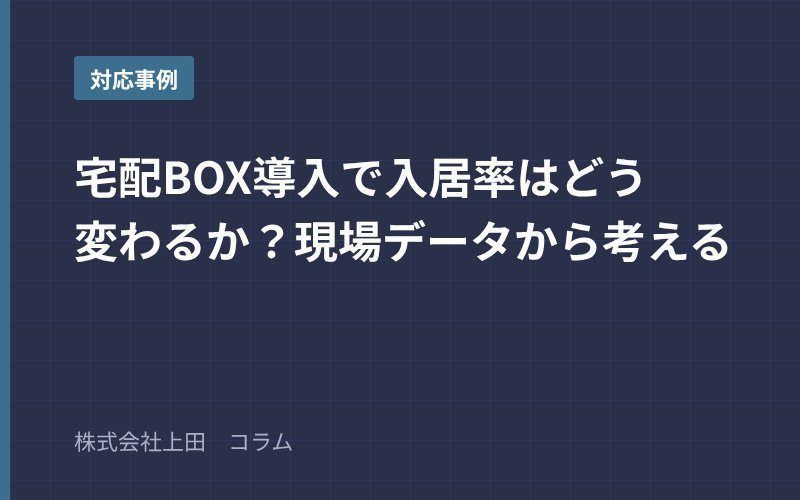
2026年9月
宅配BOXは、単身・共働き世帯を中心に、物件選びで重視されやすい設備の一つです。
費用対効果の計算は「設置費用÷（家賃アップ額 or 空室期間短縮月数×月額家賃）」で回収期間を算出する方法が実践的です。
設置コストは機器代と工事費で、台数・規模によって大きく変わるため、複数社の見積りで確認してください。
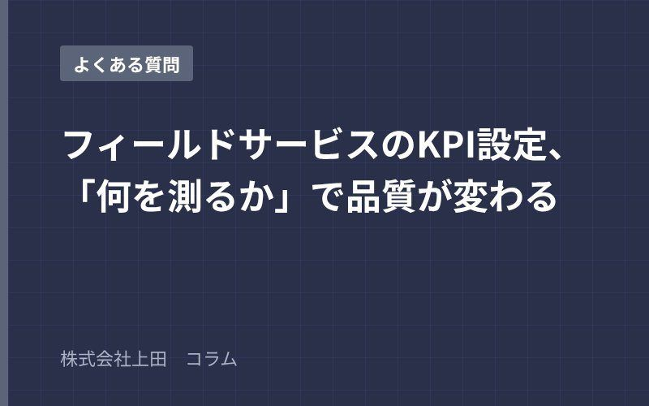
2026年8月
件数・時間だけでは品質の本質が見えません。
委託業者に要求すべき3指標は
①初回解決率（1回の訪問で解決した割合）
②顧客満足スコア（入居者アンケート等）
③再発率（同一箇所の再修繕が起きた割合）です。
この3指標を月次レビューで共有することで、「なんとなく感じが悪い業者」を数値で評価・改善できるようになります。
東京23区の消防設備点検は、株式会社上田へ
無料でお問い合わせ